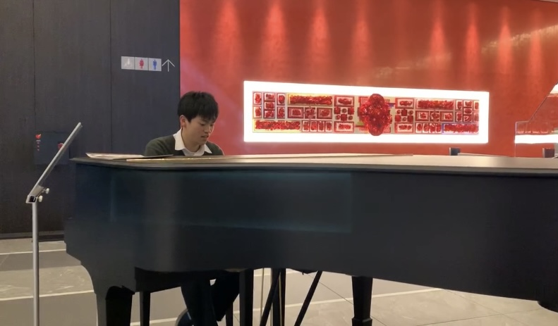
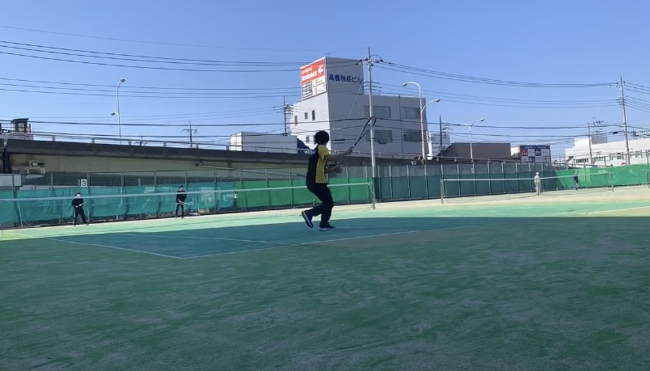
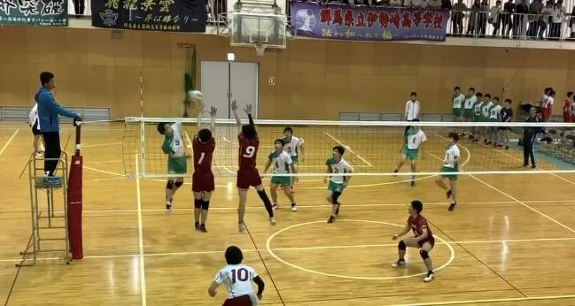
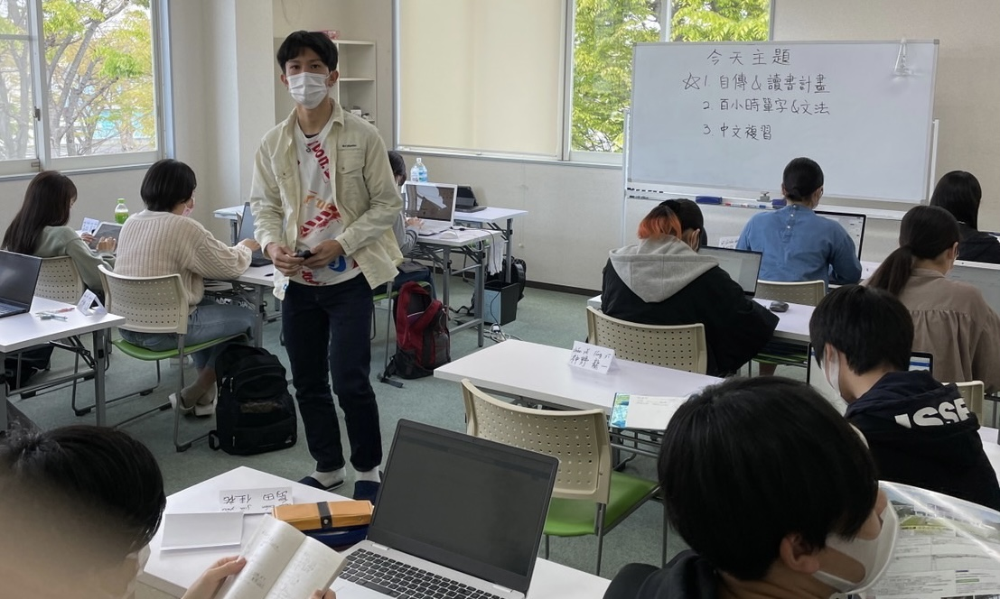
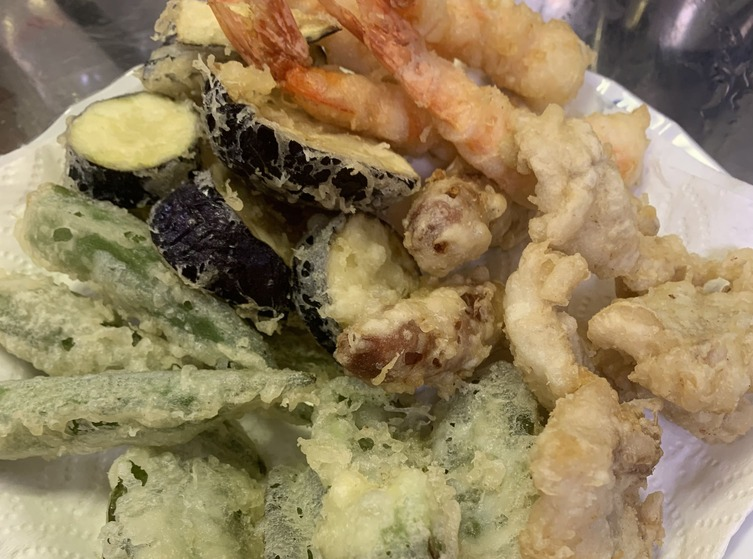

my skills～趣味特技～
piano

私は小学一年生の頃にピアノを習い始めました。正式なコンクールなどに出場したことはありませんが、中学生の頃学校内で行われた合唱コンクールで最優秀伴奏者賞をもらいました。また、中原大学ではピアノ部に参加しており、時間があれば弾きに行っています。
watch the video
soft tennis

中学生の頃、ソフトテニス部に所属してい兄の影響を受けて自分もソフトテニス部に入部しました。毎日コツコツ練習を重ねて市大会で優勝することができました。台湾に来てからはしばらくテニスをしていませんでしたが、今学期の体育でテニスを選択したこともあって、最近硬式テニスを始めました。
watch the video
volleyball

>高校2年生の体育の授業でバレーボールをやっていた時に、バレー部の友達から誘われたことがきっかけでバレーボール部に所属していました。それから毎日仲間と共に練習に励んでいましたが、新型コロナウィルスの影響で練習がなくなってしまい、入部から一年足らずで引退となってしまいました。短い期間でしたが、仲間と共に練習に励んだ日々はは私にとって大切な思い出です。
watch the photo
chinese

高校三年生の時に台湾への留学のために中国語の学習を始めました。現在、台湾に来て一年ほどが経ち、まだまだではありますが、少しは能力を向上させることができました。残りの２年間でもっと高みを目指して精進していきたいです。
watch the video
cooking

小さい頃から母の作るとても美味しい料理に憧れてよく家族に作っていました。私の料理を食べた人は皆美味しいと言ってくれますが、本当に美味しいのかは私にはわかりません。
watch the photo